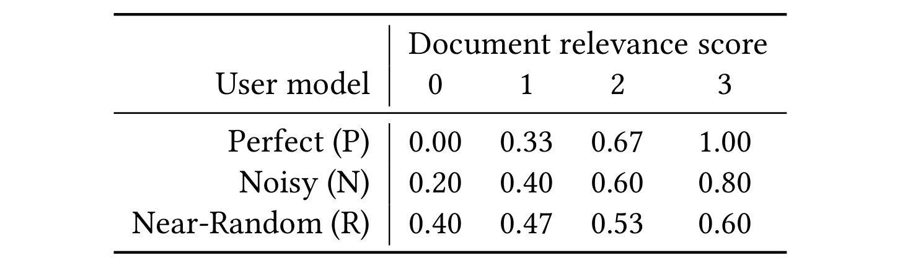
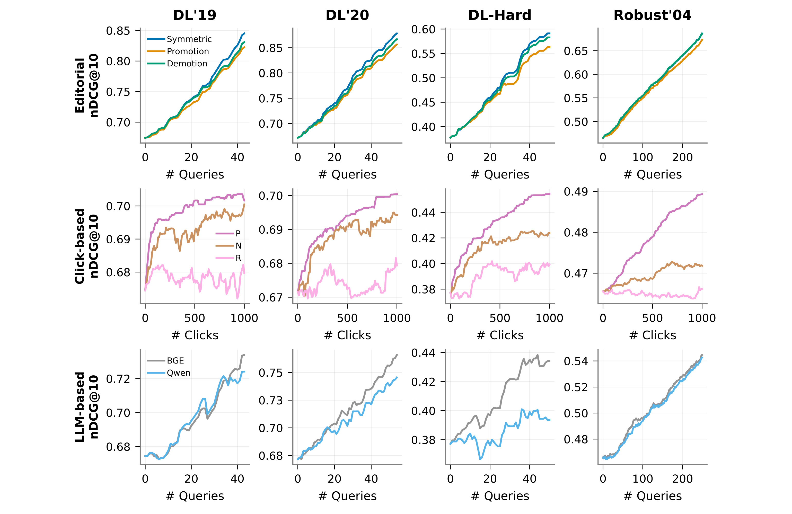
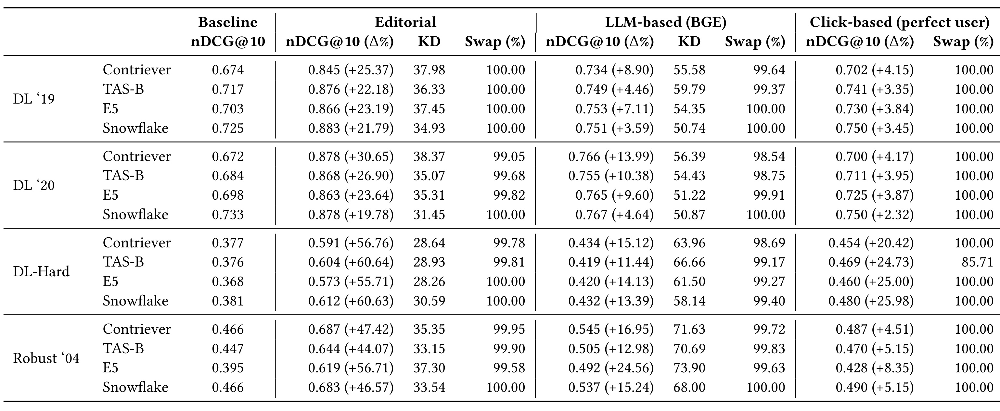
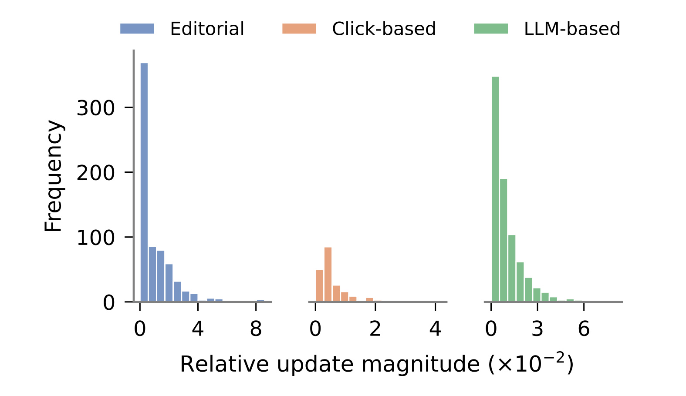
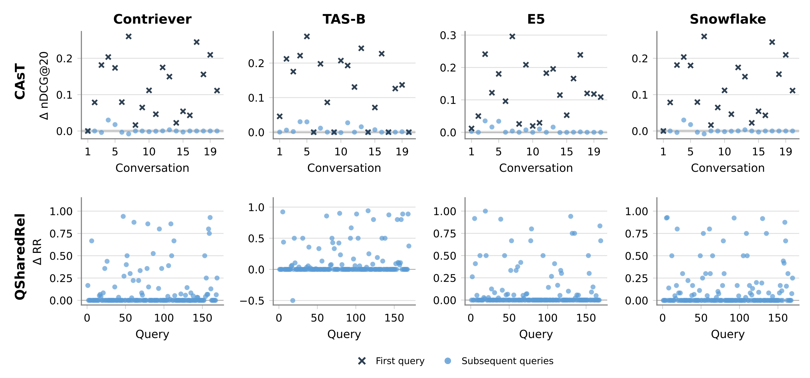
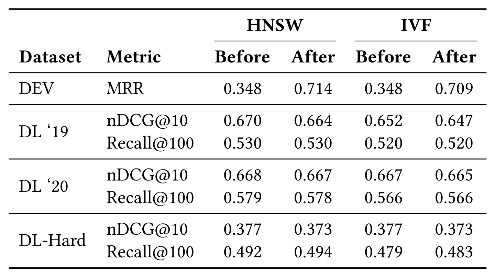
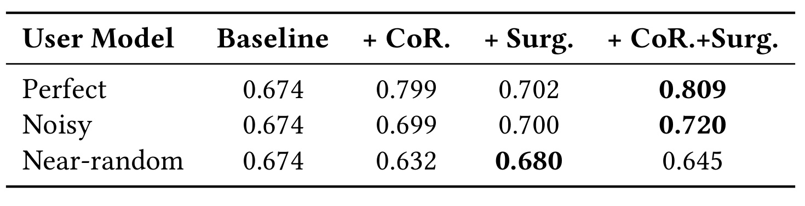

Embedding Surgery：通过局部向量手术实现稠密检索排序纠错
英文标题：Embedding Surgery: Localized Updates for Adaptive Ranking Correction in Dense Retrieval。作者：Maddalena Amendola、Antonio Mallia、Raffaele Perego。一作主机构为 IIT-CNR，合作机构包括 Seltz、ISTI-CNR。主类别：推荐算法；关联方向：稠密检索、反馈学习、RAG 检索维护。
论文入口：arXiv:2609.05110。首版公开日期为 2026-09-04，笔记核验日期为 2026-09-08。首页声明接收于 CIKM 2026；页眉、版权段和参考格式仍有 2018 年模板残留，不能据此当作 2018 年论文。作者代码仓库 已可访问，本轮核对了公开文件和核心求解/覆写代码，未执行全量复现。以下数值均为论文报告，分析推导会单独说明。
1. 背景和问题
文档向量离线计算并存入静态索引，使稠密检索难以及时吸收用户反馈、纠正具体排序错误和适应变化的检索意图。
这句话压缩转述了摘要和引言的直接问题。双塔检索把文档编码搬到离线，是大语料库能快速在线召回的重要原因：请求到来时只需计算查询表示，再做向量相似度搜索。代价是文档表示在部署后通常保持不变。一个系统可以已经知道某两个候选的顺序不对，却仍然按照旧向量反复给出同一错误。如果只有少量具体查询暴露了语义错配，重新微调模型、重新编码语料和重建索引的更新粒度就显得过大。论文把这种“知道错在哪里，但修正通道很重”的情况作为目标，而不是从头训练一个更强的检索编码器。
问题的直接对象是候选列表中的相对顺序。假设某次搜索已找到了需要的答案，只是一个不相关结果压在它上面，编辑判断、用户点击或者重排器都可能给出“后者应该更高”的信号。常规重排可以在本次响应中调整顺序，但只要底层文档表示不变，下一次相同或相近查询仍可能重新经历检索、识别错误、重排的过程。作者希望把少量纠错反馈写入可复用的表示层，让未来的向量相似度直接反映这次修正。这种持久性是方法吸引人的地方，也是必须检验副作用的原因，因为一个文档向量会被许多不同请求共享。
引言将现有解决路径分成几类，分别对应不同维护周期。在线学习排序通过持续交互改变排序函数，并且通常需要考虑探索与利用，才能在偏置反馈中获得可靠学习信号。编码器维护则关心新语料分布、表示漂移和灾难性遗忘，需要决定何时训练及怎样兼容旧索引。查询表示更新，例如根据点击文档构造查询向量，可以更灵活地响应某一个信息需求，却不一定把修改传播给语义相近、共享相关文档的其他请求。Embedding Surgery 的定位较窄：假定原有检索模型已经训练得不错，剩下的是有反馈支持的局部错误，用小幅文档向量移动进行修补。
这种定位决定了评价不能只看最终检索分数。一个修补器首先应当满足给定偏好，其次不能为了修复一条查询而大范围破坏表示空间，还要能把更新写入已有索引。如果只在目标列表上把分数抬高，容易获得看似明显的收益；真正困难的是让共享表示具有足够局部性，使不相关的请求基本稳定，同时在确有共同信息需求时允许收益迁移。因此，文中关于向量扰动、会话后续查询、共享相关文档查询和大规模 ANN 更新的实验，与主结果表同等关键。它们共同回答的是修正是否可控，而不只是能否把已知答案提前。
还需要区分“反馈校正”与“无监督能力提升”。人工相关性判断既提供目标顺序，又用于衡量目标查询的检索质量时，这实际上是一个具有理想监督的纠错实验。它能展示机制在反馈正确时可以到达什么水平，却不能证明在没有标签、没有用户行为或没有外部判断的首次查询上，也会得到相同提升。论文摘要中的最大相对收益来自这种人工反馈条件。点击实验与模型生成反馈更贴近潜在部署入口，但前者使用模拟行为，后者引入重排器自身的判断误差；把三者混成一个收益范围会抹掉最重要的因果条件。
对推荐系统而言，这项工作最接近向量召回层的局部维护，而不是点击率预估模型的训练方案。商品、内容和候选广告都可能有共享表示，运营或反馈给出的成对偏好可以转成约束，但“相关性更高”在搜索中有相对明确的评测定义，在推荐里可能同时涉及偏好、时效、负反馈和多目标收益。一个面向全体用户的文档向量更新，未必能表达互相矛盾的个性化偏好。将论文方法迁移到推荐时，必须先限定作用域，例如特定领域的召回错误或稳定的内容质量问题，不能直接把单查询纠错解释为个性化建模完成。
对检索增强生成而言，其潜在价值是把人工纠错保存在检索表示中，降低下一次请求重复拿到不合适证据的概率。不过论文没有评估下游答案忠实性、引用正确性或生成质量，也没有证明向量手术能发现候选集合之外的缺失证据。实验主要在前二十个结果内部建立约束，说明它优先处理“已经召回但排错”的情况。若答案根本没有进入候选池，单次操作就没有对应文档可供修改。若语料内容本身错误，仅改变向量也不会修复事实。因此，读者应把它看作检索维护接口的一项候选能力，按照具体错误类型验证可用范围。
本文最值得进一步研究的张力是“局部最小”和“长期稳定”之间的差别。欧氏距离最小能够解释为什么一次更新较小，却不能自动保证多轮累积之后仍然小，更不能保证所有共享文档的查询同时满意。单次优化可以没有矛盾，跨时间反馈却可能互相推翻。作者通过有限基准上的留出集与索引实验给出了积极证据，但这些证据是经验范围，不是对任意请求分布和无限更新序列的保证。把这个区分放在阅读起点，才能既看清方法设计的简洁性，也避免被“无需重建”理解成永久免维护。
进一步说，召回错误与排序错误需要不同的监督入口。如果原有候选集合已经漏掉最相关文档，当前列表内部的偏好最多改善相对次序，不能凭空补出未观察到的对象；如果目标文档仍在列表内，局部修正就有明确可操作的对象。这一区分也决定如何设计诊断集：应分别统计未召回、召回后错排、代理反馈误判和共享表示冲突，否则一个总体指标会混合四种原因，无法判断究竟该扩展候选、改进反馈还是限制手术范围。论文的前二十候选协议使第二类最容易被直接验证。
2. 方法
2.1 Embedding Surgery：最小扰动与排序约束
原文第三节先固定查询向量，再对命中候选的文档表示做优化。输入包括查询向量 $\mathbf q\in\mathbb R^d$、前 $k$ 个文档的向量 $\mathbf d_i$，以及偏好集合 $\mathcal R$。每个偏好对 $(r,n)$ 表示文档 $r$ 应位于 $n$ 之前。检索打分使用内积：
输出为每个涉及约束的文档增量 $\Delta\mathbf d_i$，并形成 $\mathbf d'_i=\mathbf d_i+\Delta\mathbf d_i$。查询和编码器参数在此阶段均保持不变。核心机制是把反馈转换为线性分数约束，再求最小平方欧氏扰动，对应原文公式一：
符号解释：$i$ 枚举候选文档，$r,n$ 标识希望前后排列的一对，$\Delta\mathbf d_i$ 是文档增量，$\mathcal R$ 是本轮反馈集合。这里的间隔 $\epsilon>0$ 避免“相等分数但排序不确定”，平方范数则惩罚不必要的移动。因为查询固定，每个分数约束对文档增量都是线性的；目标严格凸，因此在可行时具有唯一全局最优解。这个结论必须带着“可行时”阅读。作者的实验把约束来自单个目标顺序，诱导关系无环，配合非零查询与可自由移动的向量，能够构造满足它们的分数。如果同一查询要求甲高于乙、乙高于丙、丙又高于甲，累加正间隔会产生矛盾；凸性不会消除这种不可行性。多个查询的历史约束也没有被统一保留在本轮优化中。
单对约束能够直观看出为什么修改局部且小。令原始分数差的缺口为 $g=\max(0,\epsilon+s_n-s_r)$。下面是根据公式一得到的笔记推导，原文仅声明单对存在闭式解，并未把这组展开作为编号公式：
当约束已满足时，缺口为零，不需要移动；否则只沿查询方向正负各移动一半，正交方向移动不会提高当前分数差，却会增加目标值，所以最优解不需要它。分母也提醒我们非零查询假设不可遗漏。默认对称变体同时调整两边；降权变体固定相关文档，仅让不相关文档后退；提权变体反之。单对场景下，如果只许一边移动，该边需要承担全部分数修正。多个偏好共享文档时应联合求解，逐对闭式操作可能再次改变已经修好的顺序，不能把它随意当成批量二次规划的等价替代。
2.2 Feedback Models：将判断转成有序约束
原文第三点一节将人工、模型和点击三类反馈接入同一个优化问题。人工判断来自评测相关性标签，用于理想条件下检查可校正程度；模型反馈由 Qwen3-Reranker-8B 或 BGE 重排前二十个候选，生成另一个目标顺序。记原排序为 $\pi$、目标排序为 $\sigma$，二者之间的逆序数可以写成：
它计数的是两种排列的不同偏好，而不是检索质量指标。作者通过相邻交换描述从原列表到目标列表的变换，每次交换提供局部排序约束。目标排序越不同，通常需要解决的约束越多，求解难度、移动数量与误差传播机会也随之增大。重排器给出的顺序可以内部自洽，却不一定符合人的相关性标准，因此交换完成率高只说明系统较好地执行了反馈，不能单独说明反馈正确。人工反馈中的理想标签和模型生成的代理标签必须分别比较。
点击入口则从一次交互产生局部偏好：用户点击第 $i>1$ 位文档时，将它视作优于前一位文档，而不是将所有未点击候选都判负。一般点击概率拆成相关性倾向 $\hat p_r$ 与位置检查概率 $\hat p_e$，对应原文公式二及其前置定义：
其中 $\eta$ 控制排名越靠后越少被检查的强度；相关性概率由三种用户模型给定。实际实验设置 $k'=20$ 且所有位置的检查概率都等于一，也就是去掉了位置偏置。因此这里虽然借用了反事实点击建模框架，却没有通过真实日志验证完整的偏置纠正链路。所谓完美用户也不是每个“相关”级别必点：中间相关性仍按线性概率点击。单次点击只有一对约束，天然没有批量循环偏好，但多次点击累计到同一文档上仍可能前后冲突。方法处理的是当前事件，不是在长期历史中寻找一个永远兼容的偏好集合。
2.3 查询时求解与立即写回
原文第四节实现细节将上述机制接入已有检索流程。先用原查询取前二十个结果，获取反馈并构建偏好，再用 CVXPY 求解；公开源代码中对称实现使用平方范数目标和 OSQP，绝对、相对容差都设为 $10^{-7}$。求解后只更新出现在约束里的文档，其他表示保持不变，更新立即进入索引，后续查询因此会接触修改过的共享空间。这不是训练一个新的编码器，离线文档编码与查询编码仍来自已有公开检查点；纠错发生在服务时的表示状态上。因此如果以后用原编码器重新编码同一文档，手术状态也需要单独维护，不能假定新编码天然包含已吸收的反馈。
论文把间隔设为成对分数差与零点零一阈值中较小者，以限制变化。这里应按错序对的正分数缺口理解，不能把任意带符号差值直接当成正间隔。更新后不重新归一化，所有编码器都用原始内积评分。这是目标函数与实际检索保持一致的重要条件。如果把更新向量再投回单位球面，内积分数会再次改变，刚满足的线性约束未必继续成立。作者报告重新归一化会降低效果，但没有提供完整的敏感性表；小扰动也只给出经验上的相对范数变化较小，并非严格保持原范数。
共享空间带来一个可解释的传递方向。某个文档因查询 $\mathbf q$ 沿该方向移动时，另一查询 $\mathbf q'$ 的分数变化为 $\langle\mathbf q',\Delta\mathbf d\rangle$；当两查询在这个方向上相近，影响可能同向，反向则可能出现相反影响。这只是对内积的推论，不能代替实测，因为另一个查询的竞争文档也会决定最终名次。当前查询的最小扰动，不保证所有其他查询没有损失，也不保证后续更新继续满足之前的约束。批量求解、浮点写回、近似召回以及长期累积，是工程实现需要分别验证的层次。论文选择直接覆写部分 Faiss 存储并保持导航结构不动，其适用性在实验章核查。
3. 实验结果
3.1 实验设置与反馈口径
实验覆盖四种稠密检索模型：Contriever、TAS-B、E5 Multilingual、Snowflake-Arctic Embed。作者使用公开检查点，不针对本次目标任务追加微调。DL 2019 和 DL 2020 分别有四十三和五十四个查询，共享约八百八十万段落的 MS MARCO 语料；DL-Hard 关注歧义、词汇错配等困难问题。Robust 2004 使用二百四十九个标题查询及 TIPSTER 文档，相对于这些检索模型的 MS MARCO 训练背景属于域外评测。CAsT 2019 用二十组会话及改写后的查询，QSharedRel 从开发集筛选出三百四十六个共享相关段落的查询，其中一百六十九个作为施加手术的焦点。约五点六万个有判断的 MS MARCO Dev 查询则用于大规模修改测试。

表一给出的四个相关性等级是理解点击收益的前提。完美用户对零相关候选的点击概率为零，对最高相关候选为一，两个中间级别分别约为三分之一和三分之二；噪声用户把两个端点收窄为零点二和零点八；近随机用户则只有零点四到零点六的弱相关倾向。三行并不代表真实平台的三类人群分布，而是人为控制反馈质量的实验旋钮。对照这些概率，才能理解后续为什么噪声增强后收益减弱，而不能简单宣称任意错误点击都不会伤害系统。实验进一步将每个位置的检查概率设为一，前二十个候选全部有机会被考察，真实搜索中的位置曝光差异被移除了。点击文档仅与上一位组成偏好，这使每次优化非常局部，也限制了它从一次交互传播到更多候选的能力。因此表中的“完美”只表示点击倾向与相关级别最一致，并不意味着反馈预算充分，更不是人工 oracle 排序的同义词。这些条件共同解释了人工反馈、模拟点击和模型反馈的收益不能直接合并平均。
评测主要使用前十位归一化折损累计增益，单相关文档场景使用倒数排名及其平均值。KD 衡量目标排列与原排列的逆序约束数量，Swap 表示检索后排序满足约束的比例。常规效果、几何影响和查询适配对比使用 Flat 索引，专门的可扩展性实验才使用 IVF 和 HNSW。由此需要分开三类“准确”：相关性指标是否改善、给定反馈是否被执行，以及近似索引是否仍找到应有候选。这三个指标之间有关联，却不能互相替代。
3.2 反馈效果、跨模型与跨领域

图一的列依次为四个评测集合，行依次为人工、点击和模型反馈，全部使用 Contriever。第一行横轴是已执行更新的查询数，对称修改通常优于只提权或只降权，Robust 2004 上与降权接近；这支持后续实验选用对称变体。第二行横轴变成累计点击数，不能将同一横轴位置当成同等标注预算。完美用户的曲线总体更好，但噪声和近随机曲线有波动，其中 Robust 的近随机结果还有轻微下降，论文称该下降不显著。第三行展示外部重排器的判断质量会直接进入手术结果：BGE 与 Qwen 在不同集合的轨迹不同，Qwen 在 DL-Hard 的收益较弱，局部回落也说明执行纠错并不自动等于质量上升。阅读这张图最有价值的方式，是把“动作是否满足反馈”和“反馈本身是否正确”分开。人工监督下顺序改善更连续，代理反馈下变化依赖监督可靠性，二者不应共享一个无条件的性能承诺。横轴还只显示有限的一轮或若干事件，不能据此推断长时间更新仍保持单调。

表二中最醒目的相对提升是 TAS-B 在 DL-Hard 的人工反馈结果，从零点三七六到零点六零四，表内报告相对增加百分之六十点六四；直接使用已四舍五入的数值计算会有微小差异，应以作者未舍入统计口径为准。这一单元格使用真实相关性判断指导前二十个候选排序，是 oracle 条件下纠正已知错误的结果，不能称为不依赖反馈的新检索器提升。同一模型、同一数据集的 BGE 反馈结果只有零点四一九，完美模拟点击则为零点四六九，差距显示反馈源远比“是否执行手术”这个开关更能决定可达收益。跨模型来看，人工反馈各项都较大，模型反馈的相对提升范围为百分之三点五九至二十四点五六，点击条件则在百分之二点三二至二十五点九八之间。更有解释力的反例是 TAS-B 在 DL-Hard 点击设置下的交换准确率只有百分之八十五点七一，说明不能把凸优化理论直接翻译为端到端检索永远百分之百满足约束。数值容差、实际更新和排序执行应分开核查；本文没有针对这一格给出完整根因分析。
域外 Robust 的收益说明手术并不只能在编码器的主要训练域工作。例如 E5 的 BGE 反馈从零点三九五到零点四九二，相对增幅百分之二十四点五六。但这个结论的含义是无需对目标域新增模型微调、已有反馈仍可驱动局部纠错，而不是零监督域适配。论文以配对双侧检验报告大多数主结果在显著性阈值零点零五下成立，例外包括 Snowflake 在 DL 2019 上的模型反馈。标签质量和预算不相同，因此各反馈列不是严格的成本等效竞争；表格最可靠地支持“同一反馈协议下，多模型都有可观察收益”。此外正文某处把 Contriever 在 Robust 完美点击终点写为零点四八六，而表二为零点四八七，存在千分之一的显示差异；精读以主表口径为准，不放大为新发现。
3.3 向量几何与相关查询的传递

图二展示的是 DL 2019、Contriever 上相对更新幅度的分布，不是所有语料向量的绝对距离。横轴带有百分量级的缩放，三个反馈源的大量修改靠近零，通常小于零点零五，说明平方距离惩罚确实让多数纠错局限在较小范围内。人工和模型反馈的尾部较重，与一次需要处理更多排序约束相符；点击每次只生成一个约束，更新的影响范围更窄。直方图提供了“为什么直接覆写可能可行”的经验依据，因为导航结构通常不会被微小几何扰动完全破坏。但尾部仍然存在，平均小不等于每个向量都小，也不等于同一个文档反复更新后的总位移小。作者只给出这些有限设置下的分布，不能从这张图读出统一的理论半径或长期漂移上界。还有一个细节是更新后没有重新归一化，所以相对扰动同时可能改变方向和范数；将其解释为单位球面上的纯角度旋转会丢掉一部分实际机制。下一步评估应同时观察分布尾部、累计位移和受影响请求，而不是只记录平均更新量。
大规模 Flat 实验向约五点六万个有判断的开发集查询施加人工引导手术，开发集 nDCG@10 从零点四零七上升到零点七一六。更值得看的是留出的 DL 指标：DL 2019 从零点六七四小降到零点六六九，DL 2020 从零点六七二到零点六七零，DL-Hard 从零点三七七到零点三七三；对应召回基本不变，作者报告这些差异均未达统计显著。这里得到的是有限留出集没有检测到显著损害，而不是证明全局几何严格不变。局部向量变化已经发生，作者用检索表现作为其副作用的代理观测。

图三上排是会话查询，下排是共享相关段落的查询组，四列对应四种编码模型。会话设置只修改每组第一条查询，黑色叉号显示焦点查询通常明显改善，蓝点显示后续查询大多变化不大，有小幅正收益也有小幅负变化。作者还报告修改前后二十个结果交集始终大于十九，说明候选集合整体稳定，主要发生局部名次变化。共享相关段落设置更容易出现收益传递：Contriever 的一百六十九个配对案例中，五十四个改善，一个轻微下降，其余不变；其中不少不变案例的原倒数排名已为一，根本没有提升空间。这让“多数未变化”的含义更清楚，不能等同于机制没有传递作用。另一方面，TAS-B 确实存在一个倒数排名下降零点五的案例，即相关段落从第一位降至第二位。该反例说明共享相关文档只是提高了正迁移的可能性，不是无害保证。更完整的部署评估应保留这种个体负变化，而不能只用平均收益把冲突请求隐藏起来；本文的正面证据集中在有共同相关性的查询组，也未覆盖相反意图、异质用户和长期反复编辑。
3.4 求解延迟与 ANN 原位覆写
求解性能使用 AMD Rome 7742 单核处理器测量。点击单约束平均约七点九毫秒，人工批量约束平均每约束约三点六毫秒，批量联合求解摊薄了部分开销。注意这不是端到端请求延迟，也不是完整一批约束只需三点六毫秒；人工标签获取、模型重排、向量读取、网络与索引写入均可能引入额外成本。方法可以与其他工作重叠是作者的系统设计判断，论文没有给出生产请求的尾延迟曲线或吞吐对照。因此“开销低”的证据最直接覆盖小规模二次规划求解，而不能泛化为整个反馈回路几乎免费。

表三将开发集的直接收益与留出集稳定性分开呈现。HNSW 的开发集 MRR 从零点三四八到零点七一四，IVF 到零点七零九；这些查询参与了人工引导更新，因此用途是检查写回后目标修正仍然生效。留出 DL 2019 的 HNSW nDCG@10 从零点六七零到零点六六四，IVF 从零点六五二到零点六四七，其他 DL 行也多为极小变化，部分召回保持原值。作者报告差异不显著。这支持在当前向量与高召回参数下，不调整结构也能够承受这批局部更新，但不能把“不显著”说成两个索引完全等价或绝无损失。实验中 HNSW 共覆写十八万五千零六个向量而不改图连接，IVF 修改十八万三千一百零六个向量，其中六百九十一个按照新向量重新分配时会改变簇，约占百分之零点三八。这个比例足够小，解释了为何保留原簇仍可维持近似效果；它不是任意分布、任意修改量都允许固定簇的证明。
这里的 ANN 结论必须落回实现。作者公开代码显式支持 Faiss 的 IndexFlatIP、IndexHNSWFlat 与 IndexIVFFlat；HNSW 覆写函数取得底层 Flat 存储的浮点数组，按内部编号修改，明确不重算图邻居。实验 HNSW 使用连接度三十二、构建搜索宽度四百、检索搜索宽度二百五十六，属于高召回设置；IVF 簇数约为语料量平方根，探查约十分之一簇。其他图索引、压缩码本、量化向量、磁盘存储、分片副本或数据库事务接口可能不允许同样修改，或需要额外维护。本轮核实了作者代码中的 HNSW 存储路径；但当前公开主分支对 Flat 和 IVF 实际调用 remove_ids 后再 add_with_ids，与论文叙述的 IVF 保留原簇、不重新分配的实验路径并不完全一致。现有代码能证明 HNSW 存储覆写入口存在，不能据此断言已核验到论文 IVF 原位覆写实验的完整实现。我们没有独立复现数十万次写入，也不能把这段实验解读成所有 ANN 产品均有安全的原位更新 API。
3.5 与 CoRocchio 组合及预算差异

表四使用 DL 2019 与 Contriever，三种用户反馈分别比较原模型、CoRocchio、文档手术及组合。完美用户下，基线零点六七四，查询侧适配到零点七九九，文档手术到零点七零二，组合再到零点八零九；噪声用户下两单项约为零点六九九和零点七零零，组合到零点七二零，体现了互补信号。但近随机用户下，CoRocchio 降到零点六三二，手术保持零点六八零，组合只有零点六四五，继承了一部分查询更新的损害。因此不能说加上文档手术就能拯救任何有噪声的查询适配。更关键的是预算不同：CoRocchio 每条查询模拟一千次交互，四十三条查询相当于四万三千次；手术单项全体查询合计一千次；组合在查询适配后再增加一千次全局交互。组合比 CoRocchio 多的预算比例不大，但仍然不是完全相同预算。表四最强的结论是在作者指定协议下文档校正可提供额外收益且对弱反馈较稳定，而不是证明它在同预算下全面胜过查询适配。
公开范围也影响复现实验的可行性。仓库存在向量生成、索引建立、手术求解、反馈流水线、重排器、CoRocchio 和工具代码，并非只有摘要页面；但根目录可见文件清单没有 README 安装命令提到的 requirements.txt，示例仍引用早期匿名仓库入口。复现者需要自行确认依赖版本与当前源码参数。求解代码使用平方范数，而 README 公式展示没有清楚保留平方，研究口径应以原文公式一和核心实现为准。公开源码提供了有用起点，却没有在本轮证明所有命令按原样就能完整复现论文图表。
4. 总结
Embedding Surgery 的贡献是提供一个明确的局部编辑接口：把可靠的成对排序反馈转成线性约束，以最小平方扰动更新少数共享文档向量。它不需要改变编码器，却能把某次纠错持久化到后续检索。原文用多反馈、多模型、域外集合、共享文档查询和两种 ANN 索引，将“能改对”和“改完是否伤及其他部分”放在一起评估。最有迁移价值的是这种问题分解：纠错内容、几何扰动和索引执行可以分别度量，也分别失败，不能只用最终一个检索分数概括。
4.1 局限与风险
- 监督与评测边界。 最大百分之六十点六四来自人工 oracle；模拟点击还移除了位置偏置，未使用真实日志证明端到端获益。若反馈本身错了，严格执行反馈也可能降低相关性。
- 可行性与历史冲突。 实验中的单目标排序无环，保证当前对称优化可行；任意循环偏好不具备这个保证。多个查询顺序更新共享文档时，新的局部解可能破坏之前的正确排序，当前目标没有长期约束记忆。
- 几何与局部性边界。 最小平方扰动不等于范数保持或全局无害。图三中已有单个倒数排名下降零点五的案例，多轮累积和相反意图尚需系统检查。
- 索引与系统成本边界。 原位覆写证据来自特定 Faiss 浮点索引和高召回参数，不能覆盖压缩索引、磁盘数据库和并发写入。求解毫秒数也不包含取得反馈及生产链路的全部延迟。
- 比较与复现边界。 CoRocchio 与手术使用不同交互预算，组合还多用一千次交互；公开仓库的依赖文件、示例以及 IVF 更新路径与论文叙述存在不一致。本轮未运行完整实验，无法给出独立复现通过的结论。
4.2 迁移理解与后续跟进
对推荐召回的合理尝试，是先挑出有稳定语义错误、且反馈可审核的共享内容表示，验证成对纠错在其他用户请求上的外溢。对 RAG 的合理尝试，是把证据排序纠错与最终答案质量连起来测量，并记录因手术被抑制的证据是否在其他问题中仍然需要。二者都应把“相关性偏好是否全局共享”作为先验问题；用户私有意图不宜默认写入全局文档状态。以下是由论文证据引出的跟进建议，不是作者已经完成的实验。
- 首先复现单对闭式解与批量二次规划的一致性边界，覆盖已满足约束、循环偏好、零查询、极小分数差及求解失败，并测量归一化前后约束违反率，区分数学解与写回结果。
- 再做按时间划分的真实点击或审定反馈实验，用相同交互预算比较 CoRocchio、手术和组合；保留位置偏置，报告目标查询、无关查询、长尾查询的分位收益与负例。
- 最后追踪同一文档经过多轮编辑的累计位移、受影响查询和索引召回，扫描间隔与候选截断深度，比较原位覆写、重新插入及周期重建的质量和尾延迟，确定何时需要合并或撤销编辑。
这些跟进能够把论文的经验结论转化成具体系统的决策条件：何种反馈值得写回、每次允许移动多少、哪些查询必须受保护、何时应当回滚或维护索引。在这些条件尚未验证之前，更准确的评价是一个有实证支持的局部检索纠错方案，而不是已经完成线上自适应检索的全部闭环。